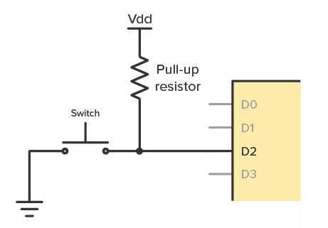

📖 ทฤษฎีก่อนใช้ Simulator
🔄 Section 1: I2C คืออะไร?
📘 I2C - Inter-Integrated Circuit
- ความหมาย: บัสสื่อสารแบบ Synchronous Serial ที่ใช้สายเพียง 2 เส้น เชื่อมต่ออุปกรณ์ได้หลายตัวพร้อมกัน
- ผู้คิดค้น: Philips Semiconductor (ปัจจุบัน NXP) ในปี 1982
- เปรียบเทียบง่ายๆ: เหมือนห้องเรียนที่มีครู 1 คน (Master) พูดกับนักเรียนหลายคน (Slave) โดยเรียกชื่อ (Address) ก่อนพูด
- ตัวอย่างการใช้งาน: จอ OLED, เซนเซอร์ BME280, EEPROM, RTC Module
💡 I2C vs SPI vs UART: I2C ใช้สายน้อย (2 เส้น) ต่อได้หลายอุปกรณ์ แต่ช้ากว่า SPI | SPI เร็วแต่ใช้สายเยอะ | UART ต่อได้แค่ 2 อุปกรณ์
🔌 Section 2: สายสัญญาณ I2C (2 เส้น)
I2C ใช้สายเพียง 2 เส้น ในการสื่อสาร (ไม่นับ GND และ VCC):
🟣 SDA - Serial Data (สายข้อมูล)
- หน้าที่: ส่ง-รับข้อมูลแบบ bidirectional (สองทิศทาง)
- เปรียบเทียบ: เหมือนกระดาน whiteboard ที่ทั้งครูและนักเรียนเขียนได้
- ลักษณะ: Open-drain — ต้องมี Pull-up Resistor ดึงขึ้น VCC
🟡 SCL - Serial Clock (สายนาฬิกา)
- หน้าที่: สร้างจังหวะ (Clock) ให้ทั้งสองฝ่ายอ่านข้อมูลตรงกัน
- ผู้สร้าง: Master เป็นคนสร้าง Clock เสมอ
- เปรียบเทียบ: เหมือนจังหวะตบมือที่ครูตบ ทุกคนต้องทำตามจังหวะ
📘 Pull-up Resistor คืออะไร?
สาย SDA และ SCL ของ I2C เป็นแบบ Open-drain — อุปกรณ์สามารถดึงสายลง LOW (0V) ได้ แต่ ไม่สามารถดึงขึ้น HIGH ได้เอง จึงต้องมี Pull-up Resistor ต่อระหว่าง VCC และสายเพื่อดึงให้เป็น HIGH เมื่อไม่มีอุปกรณ์ใดดึงลง

วงจร Pull-up Resistor: R ต่อระหว่าง VCC → SDA/SCL เพื่อดึงสายขึ้น HIGH เมื่อไม่มีการส่งข้อมูล
ไม่มีอุปกรณ์ใดดึงลง
→ Pull-up ดึงสายขึ้น VCC อัตโนมัติ
Idle State / สาย "ว่าง" = 1 เสมอ
อุปกรณ์เปิด Transistor ดึงสายลง GND เขียน bit = 0 หรือส่ง Start/ACK
| ค่า Resistor | Speed Mode | เหมาะสำหรับ |
|---|---|---|
| 10 kΩ | Standard (100 kHz) | สายยาว / ทดสอบทั่วไป |
| 4.7 kΩ | Standard / Fast (400 kHz) | ✅ ค่าที่นิยมที่สุด |
| 2.2 kΩ | Fast (400 kHz) | ต่ออุปกรณ์หลายตัว |
| 1 kΩ | Fast-mode Plus (1 MHz) | speed สูง / สายสั้น |
⚠️ ต่ำเกินไป (เช่น 100 Ω) → กินกระแสมาก วงจรร้อน | สูงเกินไป (เช่น 47 kΩ) → สัญญาณ rise time ช้า อาจ error ที่ speed สูง
⚡ ข้อดี 2 สาย: ต่ออุปกรณ์ได้ถึง 128 ตัว (7-bit address) บนบัสเดียวกัน! ประหยัดขาของ MCU มาก
👥 Section 3: Master และ Slave
📘 บทบาทของอุปกรณ์บน I2C Bus
- Master: ผู้ควบคุม — สร้าง Clock, เริ่มการสื่อสาร, เลือก Slave ด้วย Address
- Slave: ผู้รอรับคำสั่ง — มี Address เฉพาะตัว, ตอบเมื่อถูกเรียก
| คุณสมบัติ | Master | Slave |
|---|---|---|
| สร้าง Clock | ✅ สร้างเอง | ❌ ใช้ตามที่ Master ให้ |
| เริ่มการสื่อสาร | ✅ เริ่มได้ | ❌ รอถูกเรียก |
| มี Address | ❌ ไม่ต้องมี | ✅ มี 7-bit address |
| จำนวนบนบัส | 1 ตัว (ปกติ) | หลายตัว (สูงสุด 128) |
📝 Multi-Master: I2C รองรับหลาย Master ได้ แต่ในงานปวส. มักใช้ Single Master (Arduino 1 ตัว + Slave หลายตัว)
📬 Section 4: Address ของ Slave (7-bit)
Slave แต่ละตัวมี Address เฉพาะ (เหมือนเลขที่บ้าน) — Master ต้องระบุ Address ก่อนจึงจะสื่อสารได้
| อุปกรณ์ | Address (Hex) | หน้าที่ |
|---|---|---|
| OLED SSD1306 | 0x3C | จอแสดงผล |
| BME280 | 0x76 / 0x77 | วัดอุณหภูมิ ความชื้น ความดัน |
| DS3231 RTC | 0x68 | นาฬิกาเวลาจริง |
| EEPROM AT24C32 | 0x50-0x57 | หน่วยความจำ |
💡 7-bit = 2⁷ = 128 address — แต่บาง address ถูก reserve ไว้ ใช้งานจริงได้ประมาณ 112 ตัว
📦 Section 5: โครงสร้าง Data Frame ของ I2C
การส่งข้อมูล 1 ครั้งใน I2C มีโครงสร้างดังนี้:
| ส่วน | จำนวนบิต | หน้าที่ |
|---|---|---|
| Start Condition | - | SDA: HIGH→LOW ขณะ SCL=HIGH (เริ่มสื่อสาร) |
| Address | 7 bits | ระบุว่าจะคุยกับ Slave ตัวไหน |
| R/W Bit | 1 bit | 0 = Write (เขียน), 1 = Read (อ่าน) |
| ACK/NACK | 1 bit | Slave ตอบ 0 = "ได้รับแล้ว" (ACK) |
| Data | 8 bits | ข้อมูลจริงๆ ที่ต้องการส่ง |
| ACK/NACK | 1 bit | ฝ่ายรับตอบรับ |
| Stop Condition | - | SDA: LOW→HIGH ขณะ SCL=HIGH (จบสื่อสาร) |
📘 Start & Stop Condition
- Start: SDA เปลี่ยนจาก HIGH→LOW ขณะที่ SCL ยังเป็น HIGH
- Stop: SDA เปลี่ยนจาก LOW→HIGH ขณะที่ SCL เป็น HIGH
- ปกติ: SDA จะเปลี่ยนได้เฉพาะตอน SCL = LOW เท่านั้น
✋ Section 6: ACK และ NACK
หลังส่งข้อมูลทุก 8 บิต (1 byte) ฝ่ายรับจะต้องตอบรับ:
📘 ACK vs NACK
- ACK (Acknowledge): ฝ่ายรับดึง SDA = LOW → "ได้รับแล้ว ส่งต่อได้"
- NACK (Not Acknowledge): SDA ค้าง HIGH → "ไม่ได้รับ" หรือ "หยุดส่ง"
⚠️ ถ้า Master ส่ง Address แล้วไม่มี Slave ตอบ ACK → แสดงว่าไม่มีอุปกรณ์อยู่ที่ Address นั้น (หรือสายหลุด)
📤 Section 7: ขั้นตอนการสื่อสาร I2C (Write)
-
Master ส่ง Start Condition
SDA ดึงลง LOW ขณะ SCL ยัง HIGH — บอกทุกอุปกรณ์ว่า "เตรียมตัว!"
-
Master ส่ง Address (7-bit) + R/W bit
ระบุว่าจะคุยกับ Slave ตัวไหน + จะเขียน (0) หรืออ่าน (1)
-
Slave ตอบ ACK
Slave ที่มี Address ตรง ดึง SDA = LOW 1 bit → "ฉันอยู่ พร้อมรับ"
-
Master ส่ง Data (8-bit)
ส่งข้อมูลทีละ byte (8 bits, MSB first)
-
Slave ตอบ ACK อีกครั้ง
Slave ตอบว่า "ได้รับข้อมูลแล้ว"
-
Master ส่ง Stop Condition
SDA ดึงขึ้น HIGH ขณะ SCL = HIGH — "จบการสื่อสาร"
⏱️ ความเร็ว I2C: Standard Mode = 100 kHz | Fast Mode = 400 kHz | High-speed = 3.4 MHz
📚 แหล่งอ้างอิง
- NXP Semiconductors - UM10204 I2C-bus specification and user manual
- Texas Instruments - Understanding the I2C Bus
- SparkFun - I2C Tutorial
- Arduino - Wire Library (I2C)
🎮 จำลองการสื่อสาร I2C
Master
ArduinoSlave 1
OLED 0x3CSlave 2
BME280 0x76Slave 3
RTC 0x68📊 สัญญาณ I2C (Waveform)
📦 Data Frame
🎛️ แผงควบคุม
💡 คำอธิบาย
เลือก Slave Address + ข้อมูลที่ต้องการส่ง แล้วกด "ส่งข้อมูล" เพื่อดูทั้งกระบวนการ หรือกด "ทีละขั้น" เพื่อดูทีละขั้นตอน
สังเกต: Start → Address(7) + R/W(1) → ACK → Data(8) → ACK → Stop
📋 บันทึกการทำงาน
แบบฝึกหัด I2C Protocol
ฝึกทักษะครอบคลุม 7 หัวข้อทฤษฎี: I2C คืออะไร, สายสัญญาณ, Master/Slave, Address, Data Frame, ACK/NACK, ขั้นตอนการสื่อสาร และการแปลง I2C Address เป็น Binary
ทำเสร็จรับใบส่งงาน PDF พร้อมส่งครู
* กรุณากรอกชื่อก่อนเริ่มทำแบบฝึกหัด
แบบทดสอบความเข้าใจ I2C Protocol
ทดสอบความรู้จากเนื้อหาทฤษฎีที่เรียนมา (10 ข้อ)
* กรุณากรอกชื่อก่อนเริ่มทำแบบทดสอบ